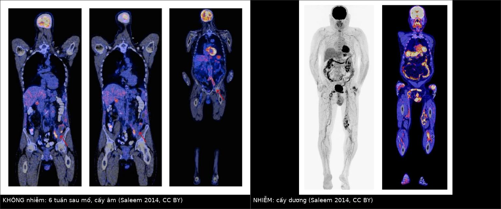
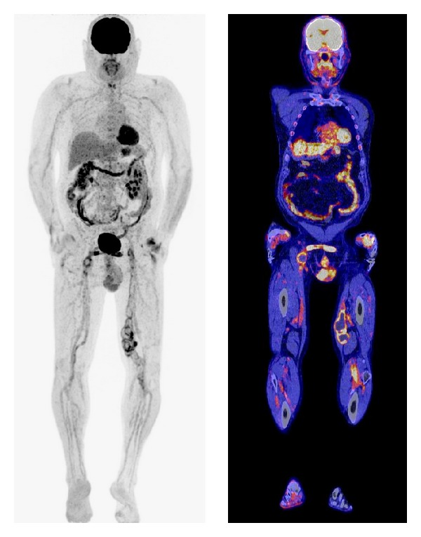
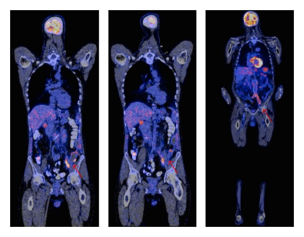
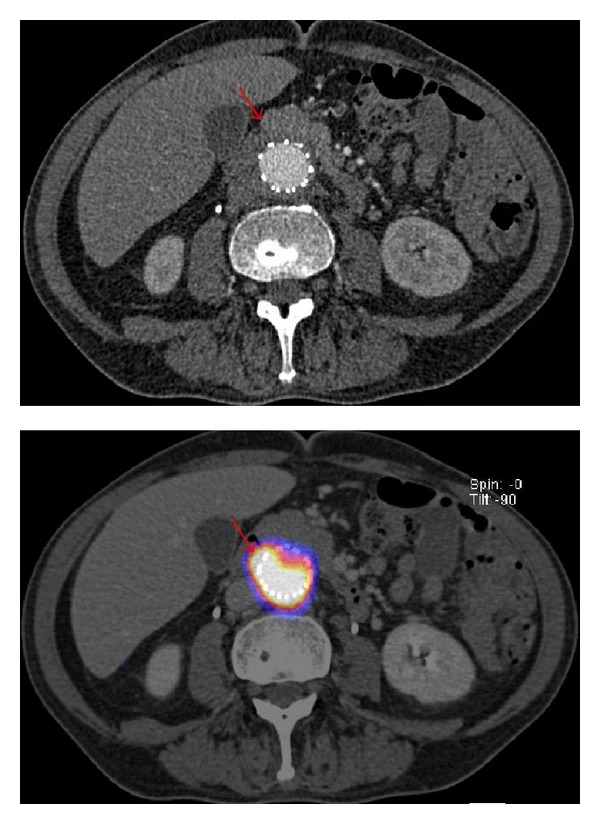

946 — Nhiễm trùng mảnh ghép mạch máu: CT không đủ, PET/CT cũng không đủ / Vascular graft & stent-graft infection
Tags: pattern:o-dich-quanh-manh-ghep pattern:khi-trong-mo-mem pattern:gia-phinh pattern:ngam-fdg-khu-tru vung:dong-mach-chu vung:dong-mach-chau vung:bung protocol:CTA protocol:PET-CT protocol:choc-hut-quanh-manh-ghep score:FDG-4-diem
Mức chắc chắn (certainty): tổng hợp y văn (literature synthesis) — số liệu từ tổng quan hệ thống 6 nghiên cứu FDG-PET/CT trong nhiễm mảnh ghép mạch máu (BioMed Res Int 2014, PMC4156987, CC BY) và nghiên cứu quan sát PET/CT hai thời điểm (dual-time-point) 29 mảnh ghép động mạch chủ (Medicine 2015, PMC4504531, CC BY-ND). Nhóm không có bệnh nhân của mình; mọi tỷ lệ dưới đây là số của tác giả gốc, ghi kèm nguồn.
Câu chốt: nhiễm mảnh ghép mạch máu hiếm nhưng chết người — 1–6% chung, cắt chi 5–25%, tử vong tới 25–88%. CT là bước đầu, nhưng dấu CT chỉ có ở ~50% ca và có thể bình thường ngay sau mổ; CT ở nhiễm độ thấp chỉ nhạy 55%. FDG-PET/CT tốt hơn nhưng 92% mảnh ghép KHÔNG nhiễm vẫn có ngấm FDG lan tỏa, và trong 6–8 tuần đầu sau mổ ngấm là sinh lý — nên câu hỏi không phải "có ngấm không" mà là "ngấm KHU TRÚ hay LAN TỎA, và có tăng dần trên ảnh muộn không".
1. Tổng quan bệnh học – cơ chế hình ảnh
1.1 Vì sao mảnh ghép bị nhiễm, và vì sao chẩn đoán khó
- Bề mặt lạ = biofilm: PTFE/Dacron là giá thể cho vi khuẩn bám thành biofilm — kháng sinh khuếch tán kém, tế bào miễn dịch không tiếp cận được → nhiễm âm thầm nhiều năm, có thể khởi phát muộn 5–16 năm sau đặt (ca trong PMC4156987: cầu nối aorto-bi-iliac đặt 16 năm trước).
- Đường vào: nhiễm tại mổ, lan từ ổ nhiễm lân cận (groin, đường tiêu hóa), hoặc gieo khuẩn qua máu (bacteremia) — vì vậy một đợt nhiễm khuẩn huyết ở người có mảnh ghép là chỉ định tìm ổ trên mảnh ghép.
- TẠI SAO CT khó: sau mổ, quanh mảnh ghép bình thường đã có ít dịch và mô xơ non; dấu "dịch/khí quanh mảnh ghép" vì thế không đặc hiệu ở giai đoạn sớm. Tác giả tổng quan ghi rõ: các dấu CT (dịch khu trú, ứ quanh mảnh ghép, giả phình, dày ruột khu trú, bọt khí) chỉ có ở ~50% ca nhiễm và có thể là bình thường sớm sau mổ (PMC4156987).
- TẠI SAO FDG-PET "bắt" được viêm: đại thực bào/neutrophil hoạt hóa tăng glucose transporter và hexokinase → tích FDG. Nhưng phản ứng mô hạt quanh vật lạ (đại thực bào, nguyên bào sợi, tế bào khổng lồ dị vật) cũng làm điều đó — nên ngấm FDG quanh mảnh ghép không đồng nghĩa nhiễm; ngấm lan tỏa gặp ở 92% mảnh ghép không nhiễm, cường độ không phụ thuộc thời gian sau mổ (5 tháng–16 năm, trung bình 10 năm) (PMC4156987).
- TẠI SAO ảnh muộn (dual-time-point) hữu ích: tổn thương nhiễm giữ FDG (bạch cầu hoạt hóa tăng hexokinase, giảm glucose-6-phosphatase) → SUV tăng thêm trên ảnh muộn; viêm xơ mạn và mô lành thải FDG → SUV giảm. Đo chỉ số giữ (retention index, RI) = (SUVmuộn − SUVđầu)/SUVđầu; RI ≥ 20% là ngưỡng tốt nhất: phát hiện 5/5 mảnh ghép nhiễm, tốt hơn SUVmax ≥ 5 trên ảnh đầu (PMC4504531).
- TẠI SAO cần CTA chứ không chỉ PET: PET cho biết "có viêm", CTA cho biết "viêm ở đâu và có biến chứng gì" — giả phình, rò vào ruột, huyết khối trong lòng, mất liên tục miệng nối; quyết định mổ dựa vào hình thái, không dựa vào SUV.
1.2 Dịch tễ và các con số quyết định xử trí
- Tỷ lệ nhiễm mảnh ghép (PMC4156987): 1–6% chung; theo vị trí: < 1% cầu nối chủ–dưới thận, 1–2% aortofemoral, tới 6% cầu nối dưới bẹn (infrainguinal). Mảnh ghép động mạch chủ: 0,3% mổ mở, 0,2% đặt stent-graft nội mạch (PMC4504531).
- Hậu quả: cắt chi 5–25%, tử vong tới 25–88% (PMC4156987).
- CT: độ nhạy/độ đặc hiệu ~95% chỉ đạt được khi nghi ngờ lâm sàng cao; ở nhiễm độ thấp: nhạy 55%, đặc hiệu 100% (PMC4156987).
- FDG-PET/CT (6 nghiên cứu, PMC4156987): Fukuchi 2005 (33 ca, PET) nhạy 91% / đặc hiệu 64%; Keidar 2007 (39 ca, PET/CT, đọc định tính) 93% / 91%; Spacek 2009 (76 ca, PET/CT) 78,2% / 92,7%; Bruggink 2010 (25 ca) 93% / 70%.
- Đọc theo hình thái: khi có ổ ngấm khu trú + bờ mảnh ghép không đều, độ chính xác tới 97% (Spacek, dẫn qua PMC4504531).
- Hai thời điểm (PMC4504531, 29 mảnh ghép chủ, 5 nhiễm): RI nhiễm 0,20–0,89; RI không nhiễm −0,36 đến 0,31; 3 mảnh ghép không nhiễm nhưng viêm hoạt động có RI > 20% → vẫn có giả dương. Ví dụ SUVmax: nhiễm 12,63 → 16,28 (muộn); "không nhiễm" (nhiễm khuẩn tiết niệu) 6,03 → 7,03.
- Cửa sổ sinh lý: trong 6–8 tuần đầu sau mổ, ngấm FDG quanh mảnh ghép có thể sinh lý → tránh kết luận nhiễm trên PET chụp quá sớm (PMC4156987).
2. Mẫu hình + chẩn đoán phân biệt theo vị trí (Gamut)
- Mảnh ghép động mạch chủ ngực: sốt + đau ngực/đau lưng; biến chứng chết người là rò động mạch chủ–phế quản/thực quản (herald bleed) và giả phình miệng nối — nối bài 086/938.
- Mảnh ghép động mạch chủ bụng: đau lưng + sốt + dấu viêm (CRP/ESR); biến chứng rò động mạch chủ–ruột (xuất huyết tiêu hóa + khí trong ổ giả phình), huyết khối mảnh ghép, áp-xe quanh mảnh ghép, viêm đốt sống lân cận (nối 6163).
- Mảnh ghép chậu/bẹn (infrainguinal): tỷ lệ nhiễm cao nhất (tới 6%); sưng–đỏ–chảy mủ vùng bẹn, giả phình miệng nối, rò ra da; dễ nhầm nang bạch huyết/hạch viêm.
- Cầu nối chạy thận (AV graft): nhiễm đường hầm, huyết khối, giả phình tại chỗ chọc; khác với nhiễm catheter trung tâm/rốn (nối 3045/945).
- Stent-graft nội mạch: nhiễm hiếm hơn (0,2%) nhưng khi xảy ra không lấy stent ra được dễ dàng → thường phải kháng sinh kéo dài/thay mảnh ghép; dấu CT: dịch quanh stent mới xuất hiện, bọt khí, dày thành.
- Theo hình thái: ổ dịch quanh mảnh ghép (áp-xe) → khí (nhiễm kỵ khí/hoại tử) → giả phình (miệng nối nhiễm) → rò (ruột/thực quản/phế quản) → lan ra mô mềm/tủy sống.
3. Bảng so sánh phân biệt (ma trận đối chiếu)
| Thực thể (entity) | Hình ảnh điển hình (CTA / PET-CT) | Chốt vào (rule-in) | Chốt loại (rule-out) | Gợi ý xác nhận |
|---|---|---|---|---|
| Nhiễm mảnh ghép | Dịch quanh mảnh ghép tăng kích thước, bọt khí, dày thành, giả phình miệng nối; PET: ngấm khu trú, tăng trên ảnh muộn (RI ≥ 20%), bờ mảnh ghép không đều | Ngấm khu trú + RI ≥ 20% + dịch/khí mới + hội chứng viêm | Ngấm lan tỏa đều, không đổi trên ảnh muộn, không dịch/khí → viêm xơ lành | Cấy dịch/mô; PET ≥ 8 tuần sau mổ |
| Viêm xơ quanh mảnh ghép (hậu phẫu) | Dịch mỏng, đều, giảm dần; mô mềm quanh đồng nhất; ngấm FDG lan tỏa, nhẹ | Ngấm lan tỏa + bệnh nhân không sốt + CRP giảm dần | Ngấm khu trú mạnh, khí, giả phình → nhiễm | Theo dõi CTA 3 tháng; không chọc |
| Huyết khối trong lòng mảnh ghép | Khuyết thuốc trong lòng, không có dịch ngoài; FDG âm hoặc rất nhẹ | Khuyết thuốc trong lòng + mạch xa yếu | Dịch/khí ngoài mảnh ghép + sốt → nhiễm | CTA thì mạch; siêu âm Doppler |
| Tụ máu quanh mảnh ghép | Khối đậm độ cao (50–80 HU), không ngấm thuốc, hình theo khoang | Đậm độ máu + không ngấm + tụt Hb | Ngấm thuốc viền + khí + sốt → áp-xe | CTA; theo dõi kích thước |
| Giả phình miệng nối (vô khuẩn) | Túi thông với lòng mạch, cổ rõ, không dịch bẩn; FDG âm/viền nhẹ | Cổ rõ + ngấm thuốc đồng thì với ĐM | Cổ không rõ, bờ mờ, dịch quanh + sốt → giả phình nhiễm | CTA; siêu âm; cân nhắc can thiệp |
| Rò động mạch chủ–ruột | Khí trong ổ giả phình sát ruột, mất mỡ giữa ĐM và ruột, máu trong lòng ruột | Khí trong túi + xuất huyết tiêu hóa (herald bleed) | Khí đơn thuần sớm sau mổ, không máu → theo dõi | CTA; nội soi tiêu hóa có thể làm bùng phát chảy máu (nối 086/938) |
| Nhiễm mô mềm/hạch lân cận | Ngấm FDG ở hạch/cơ/mô mỡ, mảnh ghép không ngấm khu trú | Ổ ngấm NGOÀI mảnh ghép + mảnh ghép sạch | Ngấm đúng trên thành mảnh ghép → nhiễm mảnh ghép | PET/CT định vị; cấy ổ nguyên phát |

Trái: KHÔNG nhiễm — Viabahn động mạch chậu trái, PET/CT 6 tuần sau mổ vì sốt/nhiễm khuẩn huyết; có ngấm FDG quanh mảnh ghép nhưng cấy âm (ngấm sinh lý/hậu phẫu + ổ nhiễm khác). Phải: NHIỄM — cầu nối chậu–đùi, ngấm khu trú, đậm, dọc mảnh ghép, cấy dương. Nguồn: Saleem BR và cs, BioMed Res Int 2014, Fig. 2–3, CC BY 4.0 (PMC4156987). Ảnh ghép letterbox bằngtools/make_composite.py, giữ nguyên aspect.
Cách đọc ngấm FDG quanh mảnh ghép — 4 câu hỏi theo thứ tự
- Khu trú hay lan tỏa? Khu trú = nghi nhiễm; lan tỏa đều dọc mảnh ghép = thường là phản ứng vật lạ.
- Bờ mảnh ghép có đều không? Bờ không đều/gồ ghép + ổ khu trú → độ chính xác tới 97% (Spacek).
- Có tăng trên ảnh muộn không? RI ≥ 20% → nghi nhiễm (nhưng 3 ca viêm hoạt động vẫn giả dương).
- Có dấu hình thái kèm theo không? Dịch mới/tăng, khí, giả phình, rò — hình thái quyết định mổ, không phải SUV.
4. Protocol chụp + phân độ và xử trí
4.1 Trình tự chẩn đoán
flowchart TD
A[Sốt + đau vùng mảnh ghép / nhiễm khuẩn huyết không rõ ổ] --> B[CTA mạch có cản quang, lát ≤ 1 mm, thì ĐM + TM]
B --> C{Dịch mới, khí, giả phình, rò?}
C -->|Có, rõ| D[Cấy dịch/mô + hội chẩn mạch máu: chỉ định mổ]
C -->|Không rõ| E{> 8 tuần sau mổ?}
E -->|Không| F[Theo dõi + CRP/ESR; chụp lại sau 6–8 tuần]
E -->|Có| G[FDG-PET/CT, đọc khu trú/lan tỏa + ảnh muộn RI]
G --> H{Ổ khu trú + RI ≥ 20% hoặc bờ mảnh ghép không đều?}
H -->|Có| I[Cấy dưới hướng dẫn + kháng sinh theo cấy; cân nhắc cắt mảnh ghép]
H -->|Không| J[Lan tỏa, RI thấp: tìm ổ nhiễm NGOÀI mảnh ghép]
J --> K[PET toàn thân: hạch, tiết niệu, cột sống, ổ răng]
- CTA là bước 1, luôn làm: lát ≤ 1 mm, thì động mạch + tĩnh mạch, dựng MPR; báo cáo 6 mục: (1) vị trí/loại mảnh ghép; (2) dịch quanh mảnh ghép (kích thước, đậm độ, bờ); (3) khí; (4) giả phình/miệng nối; (5) mạch xa + huyết khối; (6) lan ra mô mềm/tủy sống/ruột.
- FDG-PET/CT: chụp ≥ 8 tuần sau mổ (tránh cửa sổ sinh lý 6–8 tuần), hai thời điểm (60 và ~110 phút) nếu nghi nhiễm độ thấp; báo SUV đầu/muộn + RI.
- Chọc hút dịch quanh mảnh ghép dưới hướng dẫn: là cách lấy chuẩn vàng vi sinh, nhưng chỉ khi có ổ dịch và đã loại trừ giả phình/rò, và phải coi là thủ thuật có nguy cơ (nhiễm đường vào, chảy máu) — không chọc "để chắc".
- Cấy máu trước kháng sinh, 2–3 bộ; nếu Staphylococcus aureus phân lập được ở người có mảnh ghép → tìm ổ trên mảnh ghép chủ động.
4.2 Phân độ đọc PET và ngưỡng xử trí
- Thang 4 điểm (PMC4156987): 1 = ngấm bằng nền; 2 = thấp, bằng cơ/fat không hoạt động; 3 = trung bình, rõ hơn cơ nhưng kém hơn bàng quang; 4 = mạnh, bằng bàng quang. Độ 3–4 = xác suất cao nhiễm mảnh ghép. Thang 5 điểm tương đương (0–4) với cùng ngưỡng 3–4.
- Ngưỡng định lượng: SUVmax ≥ 5 trên ảnh đầu (ngưỡng của nghiên cứu PMC4504531) kém chính xác hơn RI ≥ 20%; RI > 20% cũng gặp ở viêm hoạt động không nhiễm → luôn kết hợp hình thái.
- Xử trí (nguyên tắc): nhiễm mảnh ghép không chữa khỏi bằng kháng sinh đơn thuần vì biofilm — cần lấy bỏ toàn bộ mảnh ghép nhiễm + bắc cầu ngoài giải phẫu (extra-anatomic) hoặc tái tạo in situ (mảnh ghép tẩm rifampicin/vancomycin, hoặc tĩnh mạch tự thân) + kháng sinh 4–6 tuần (kéo dài hơn nếu cấy dương dai dẳng hoặc còn vật lạ). Ở bệnh nhân không thể mổ: kháng sinh ức chế (suppressive) dài hạn — kiểm soát triệu chứng, không khỏi.
- Thời điểm mổ khi có biến chứng: rò động mạch chủ–ruột/thực quản = cấp cứu (nguy cơ chảy máu ồ ạt), không chờ đủ kháng sinh.
5. Biến thể bình thường và cạm bẫy
- Ngấm FDG lan tỏa quanh mảnh ghép là bình thường: gặp ở 92% mảnh ghép không nhiễm, không liên quan thời gian sau mổ → đừng chẩn đoán nhiễm chỉ vì "có ngấm".
- PET chụp quá sớm: trong 6–8 tuần sau mổ, ngấm là sinh lý — ca "không nhiễm" trong ảnh trên được chụp đúng 6 tuần sau đặt Viabahn.
- Ổ nhiễm ngoài mảnh ghép: nhiễm khuẩn tiết niệu, hạch, ổ răng, viêm đốt sống có thể làm SUV quanh mảnh ghép tăng giả (ví dụ 6,03 → 7,03 trong PMC4504531); luôn đọc toàn thân, không chỉ vùng mảnh ghép.
- Đái tháo đường/tăng đường huyết: ngấm FDG không đặc hiệu hơn ở mô viêm; kiểm tra glucose máu (< 8 mmol/L trong nghiên cứu) trước khi kết luận.
- "Không có khí không loại trừ": dấu CT chỉ có ở ~50% ca nhiễm; dịch quanh mảnh ghép ở người không sốt, giảm dần có thể chỉ là hậu phẫu.
- Đừng chọc giả phình: chọc hút "ổ dịch" quanh miệng nối có thể là giả phình → chảy máu không cầm; luôn CTA/Doppler trước khi chọc.
- Nhiễm muộn nhiều năm: tiền sử đặt mảnh ghép 16 năm vẫn có thể là nguồn nhiễm; đừng loại trừ vì "đã lâu".
- Satisfaction of search: thấy một ổ dịch quanh mảnh ghép rồi dừng — phải xem toàn bộ chiều dài mảnh ghép và miệng nối hai đầu, nơi tổn thương hay khu trú.
6. Tự lượng giá — Blind Quiz
Ca 1 — Nam 70 tuổi, cầu nối chậu–đùi trái 2 năm trước, nay sốt 38,5 °C, đau vùng bẹn trái, CRP tăng. Xem PET/CT toàn thân + CT ngang trước khi mở đáp án.

- Hỏi: Ngấm FDG nằm ở đâu và có dạng gì? Vì sao đây là nhiễm mảnh ghép chứ không phải viêm hậu phẫu?
Bấm để hiện đáp án (findings + chẩn đoán)
- Dấu hiệu: ngấm FDG khu trú, đậm, chạy dọc toàn bộ mảnh ghép chậu–đùi trái (MIP + ảnh hợp nhất); ổ ngấm không đối xứng với bên phải.
- Chẩn đoán: nhiễm mảnh ghép mạch máu (ca cấy dương trong bài gốc). Chốt: khu trú + bờ mảnh ghép không đều + hội chứng viêm; viêm hậu phẫu thường lan tỏa, nhẹ, giảm dần.
- Việc cần làm: CTA đánh giá miệng nối/giả phình/rò; cấy máu + cấy dịch; hội chẩn mạch máu về lấy mảnh ghép + bắc cầu ngoài giải phẫu + kháng sinh 4–6 tuần.
- Nguồn ảnh: Saleem BR và cs, BioMed Res Int 2014;2014:471971, Fig. 3, CC BY 4.0 (PMC4156987).
Ca 2 — Nam 45 tuổi, đặt Viabahn động mạch chậu trái vì vỡ mạch, 6 tuần sau nhập viện sốt và nhiễm khuẩn huyết. Xem PET/CT.

- Hỏi: Có ngấm FDG quanh mảnh ghép — vì sao vẫn không gọi là nhiễm? Yếu tố nào trên thời gian giúp tránh chẩn đoán sai?
Bấm để hiện đáp án (findings + chẩn đoán)
- Dấu hiệu: ngấm FDG lan tỏa, nhẹ dọc động mạch chậu trái quanh mảnh ghép Viabahn; không có ổ dịch/khí/giả phình trên CT.
- Chẩn đoán: không nhiễm mảnh ghép (cấy âm trong bài gốc) — ngấm sinh lý/hậu phẫu trong cửa sổ 6–8 tuần, cộng ổ nhiễm khác gây sốt.
- Bài học: PET trong 6–8 tuần đầu sau đặt mảnh ghép không đáng tin; nếu bắt buộc phải chụp, dựa vào hình thái CTA và theo dõi, không dựa vào ngấm lan tỏa.
- Nguồn ảnh: Saleem BR và cs, BioMed Res Int 2014, Fig. 2, CC BY 4.0 (PMC4156987).
Ca 3 — Bệnh nhân có stent-graft động mạch chủ bụng, sốt kéo dài. Xem CT ngang và ảnh PET hợp nhất cùng lát.

- Hỏi: Trên CT một mình, dấu hiệu nào là bất thường? Ảnh PET thêm được thông tin gì mà CT không có?
Bấm để hiện đáp án (findings + chẩn đoán)
- Dấu hiệu: CT: mô mềm/dịch quanh stent-graft (mũi tên đỏ), không có khí rõ; PET hợp nhất: ổ ngấm FDG đậm, khu trú đúng vùng mô mềm quanh mảnh ghép, không lan tỏa.
- Chẩn đoán: nhiễm mảnh ghép nội mạch (ca cấy dương). Chốt: dịch quanh mảnh ghép + ngấm khu trú; CT đơn thuần chỉ nói "có dịch", PET nói "dịch đó đang viêm".
- Vì sao quan trọng: quyết định mổ lấy mảnh ghép (khó với stent-graft) hay kháng sinh ức chế dài hạn phụ thuộc bằng chứng nhiễm, không chỉ "có dịch".
- Nguồn ảnh: Saleem BR và cs, BioMed Res Int 2014, Fig. 4, CC BY 4.0 (PMC4156987).
Bài liên quan chéo
- 945 – Nhiễm và biến chứng port-a-cath
- 086 – Rò động mạch chủ–phế quản
- 938 – Rò động mạch chủ–ruột
- 939 – Rò động mạch chủ–tĩnh mạch chủ
- 6163 – Viêm đĩa đệm–thân sống và phình ĐMC nhiễm khuẩn
- 3045 – Catheter rốn sơ sinh (UVC/UAC)
- 932 – An toàn bức xạ trong CT và DSA
- 901 – Tổng quan can thiệp mạch
Ảnh
images/946_nhiem-manh-ghep_PET-CT_PMC4156987.jpg— PET/CT toàn thân, mảnh ghép nhiễm (Fig. 3).images/946_khong-nhiem_PET-CT_PMC4156987.jpg— PET/CT, mảnh ghép không nhiễm 6 tuần sau mổ (Fig. 2).images/946_nhiem-manh-ghep_CT-PET_PMC4156987.jpg— CT ngang + PET hợp nhất, nhiễm stent-graft (Fig. 4).images/composite_nhiem-vs-khong-nhiem.jpg— ảnh ghép đối chiếu (tạo bằngtools/make_composite.py).- Cả 4 ảnh: CC BY 4.0 (PMC4156987) → dùng được kể cả thương mại, phải ghi công; ghi chi tiết trong
images/CREDITS.md.
Không dùng để chẩn đoán độc lập khi chưa có người hướng dẫn.